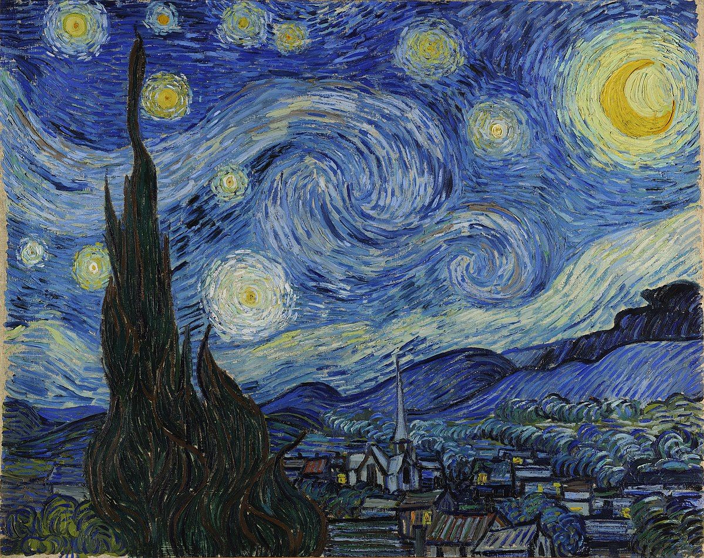

Style Image
We will be reimplementing this paper. The basic idea it to use convolutional neural networks to extract the art style from one image (the style image) and transfer it to another (the content image).
Following the algorithm in the paper, I used ImageNet's pretrained VGG19 model availabe
from PyTorch (see torchvision.models) as
the base model. Then create a wrapper model on top of it for the style transfer.
I used the basic Adam optimizer and the loss function from the paper.
The loss function is: $$Loss_{total} = weight_{content} * Loss_{content} + weight_{style} * Loss_{style}$$
I experimented with a series of combinations for {content_weight, style_weight, num_epochs, learning_rate}.
In the paper, the researchers got best results when using style_weight = 1e4. However, I got
best results with style_weight = 1e6
(consider content_weight = 1).
I thought I would need to train for very long, but after a few 100 epochs, the results were actually pretty
good already. I ended up with num_epochs = 1000, it seems to give a balance between content and
style. And a
larger learning rate seems
to help too.

style_weight=100.0, num_epochs=1000, learn_rate=0.01

style_weight=1000.0, num_epochs=1000, learn_rate=0.01
style_weight=10000.0, num_epochs=1000, learn_rate=0.01

style_weight=10000.0, num_epochs=1000, learn_rate=0.01

style_weight=10000.0, num_epochs=1000, learn_rate=0.01
style_weight=100.0, num_epochs=1000, learn_rate=0.005
style_weight=1000.0, num_epochs=1000, learn_rate=0.005

style_weight=10000.0, num_epochs=1000, learn_rate=0.005

style_weight=10000.0, num_epochs=1000, learn_rate=0.005

style_weight=10000.0, num_epochs=1000, learn_rate=0.005
style_weight=100.0, num_epochs=1000, learn_rate=0.001
style_weight=1000.0, num_epochs=1000, learn_rate=0.001

style_weight=10000.0, num_epochs=1000, learn_rate=0.001

style_weight=10000.0, num_epochs=1000, learn_rate=0.001

style_weight=10000.0, num_epochs=1000, learn_rate=0.001
style_weight=10000.0, num_epochs=1000, learn_rate=0.01

style_weight=10000.0, num_epochs=1000, learn_rate=0.005
style_weight=1000000.0, num_epochs=1000, learn_rate=0.01


style_weight=10000.0, num_epochs=1000, learn_rate=0.01